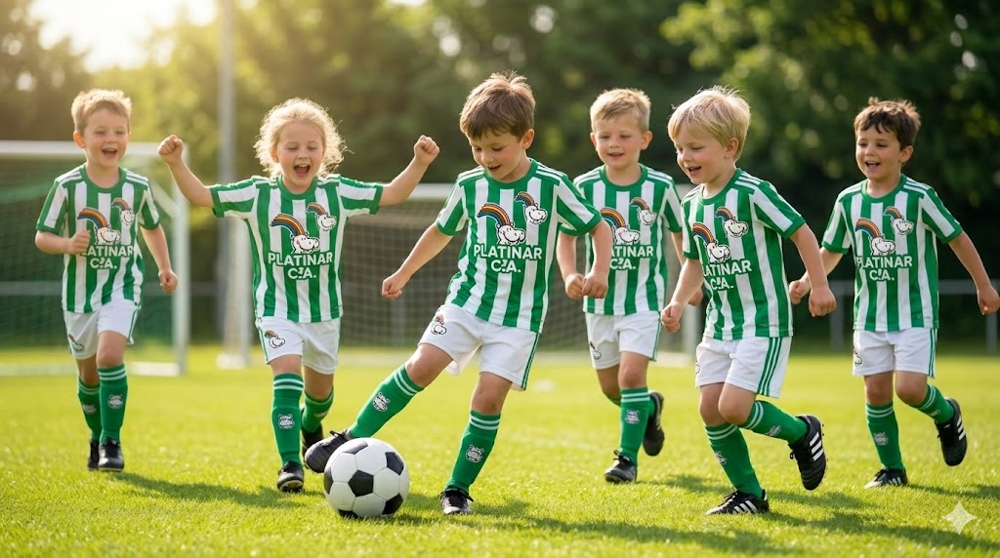
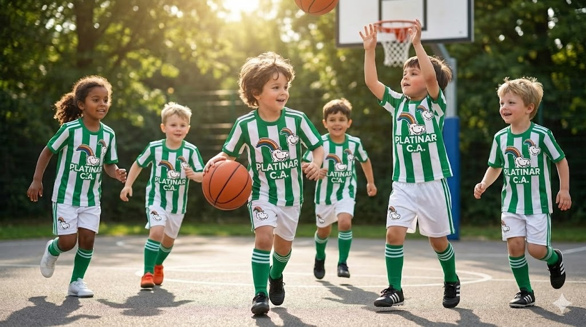
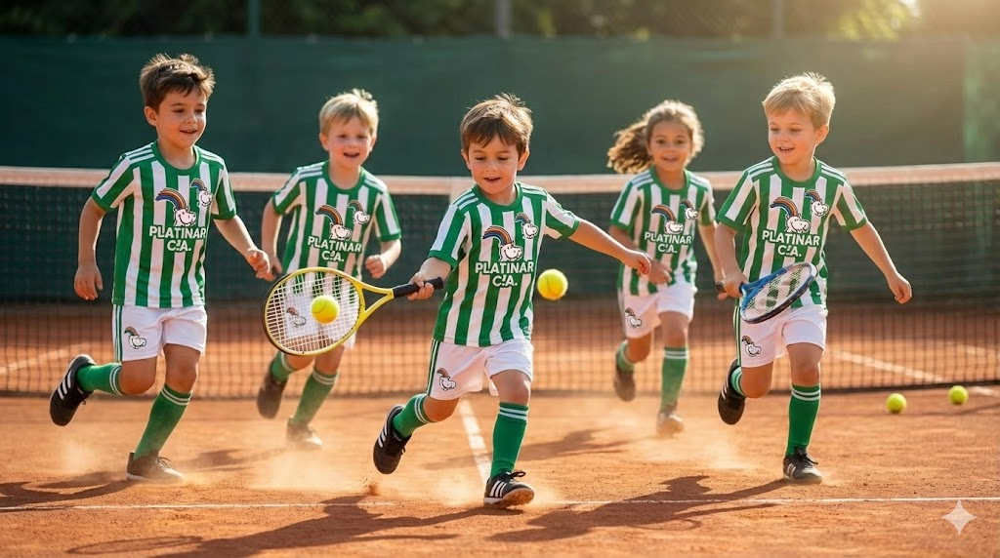
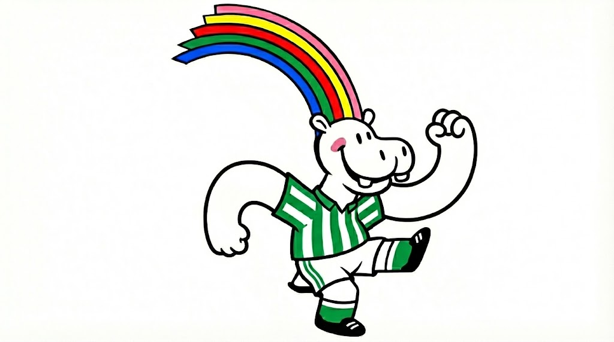

Fútbol
Desde nuestra creación, el grupo de fútbol ha sido reconocida en todo el barrio. Nuestros equipos infantiles y cadetes han levantado copas locales.


Actualmente disponemos de grupos de deportes para niños de 10 a 15 años.

Desde nuestra creación, el grupo de fútbol ha sido reconocida en todo el barrio. Nuestros equipos infantiles y cadetes han levantado copas locales.

El baloncesto se ha convertido en un pilar fundamental. Enseñamos a los más pequeños la importancia de la rapidez mental y el compañerismo dentro de la cancha.

Nuestro grupo de tenis ha formado a grandes promesas locales, enfocándose en la técnica, la concentración y el respeto al rival.

La Mascota Oficial
Este gran hipopotamo nos acompaña en todos los partidos.
Representa la agilidad, la fuerza y la alegría de nuestros
niños.